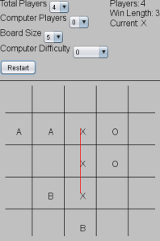

Hey, I'm Ross Bell! I'm married to Shatra Bell, have a too-cool-for-me sister Alison, and parents Rick and Kathy. Shatra and I met while on the USRP at NASA Langley.
Currently, I spend my days at Backstop Solutions in Chicago, and I can confidently say I've found a great place to work with an exceptional team. I love living downtown and haven't owned a car since college-ish.
My interests include turning ideas into software, laughing at things, entertainment media, and going to the gym first thing in the morning.
If you need to contact me, drop me a line at RossAllenBell at gmail.
Some things of mine that I find interesting follow...

JMacro - This is a macro program and scripting language I wrote that allows you to script input events like key presses and mouse clicks. I'm pretty sure some better commercial software out there exists for this purpose, but it was nice to write something "real" outside of work. I was surprised to learn how fun and relatively simple it is to write a compiler for the scripting language.
ATOL Data Visualizer - This is a data visualization application I wrote while working at NASA's Air Traffic Operations Laboratory (ATOL) at the Langley Research Center (LaRC) on the USRP. It would take data gathered from our laboratory test runs and allow us to "replay" the run and visualize exactly what happened. While I can't post the source code and distribution package here for anybody to freely download, I would be more than happy to provide either upon request. If interested, just send me a line at RossAllenBell at gmail.
Toaster Tales - A three level, side-scroller game for the Game Boy Advance. You'll also need a compatible GBA emulator. This game was created by my team for a game programming class in the final semester of my undergraduate career.

Puyo-Puyo - I created the 2D Puyo-Puyo game over a weekend by request. Very similar to Tetris, the player lines up same-colored pieces to "break" them. Puyo-Puyo was programmed in Java and uses the Java 2D libraries.

Sthnake - Before I got into an ambitious HTML5/Canvas project, I wanted to create a quick starter app to teach myself the basics to HTML5's Canvas.

Parkaos - Very much a work in progress, this was an attempt to combine a 2D platformer, parkour, and the physics look-and-feel of Darkfall Online. Built with HTML5's Canvas and Javascript.

Tic Tac Toe - I wrote this in order to learn JavaFX. Since then, JavaFX has become somewhat stagnant, so there's a good chance it was my first and last foray into that world.